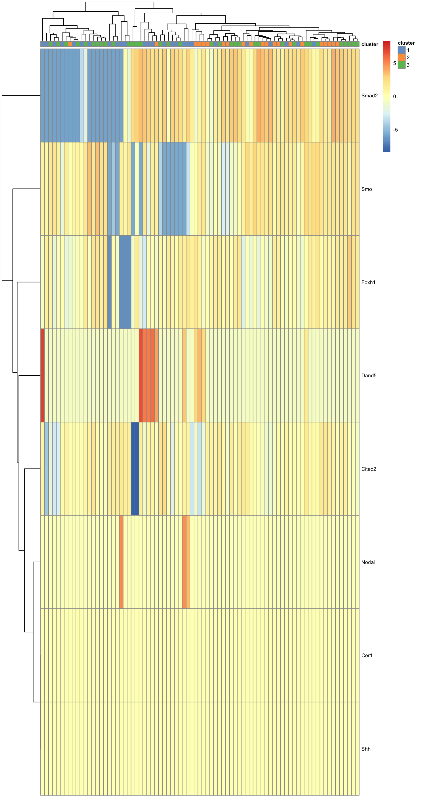
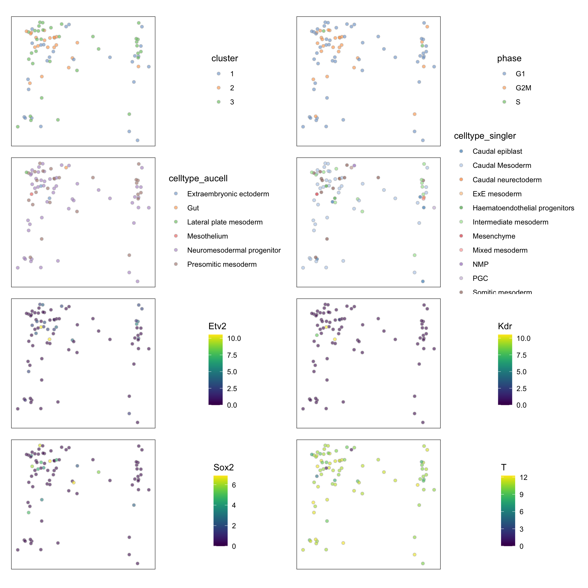
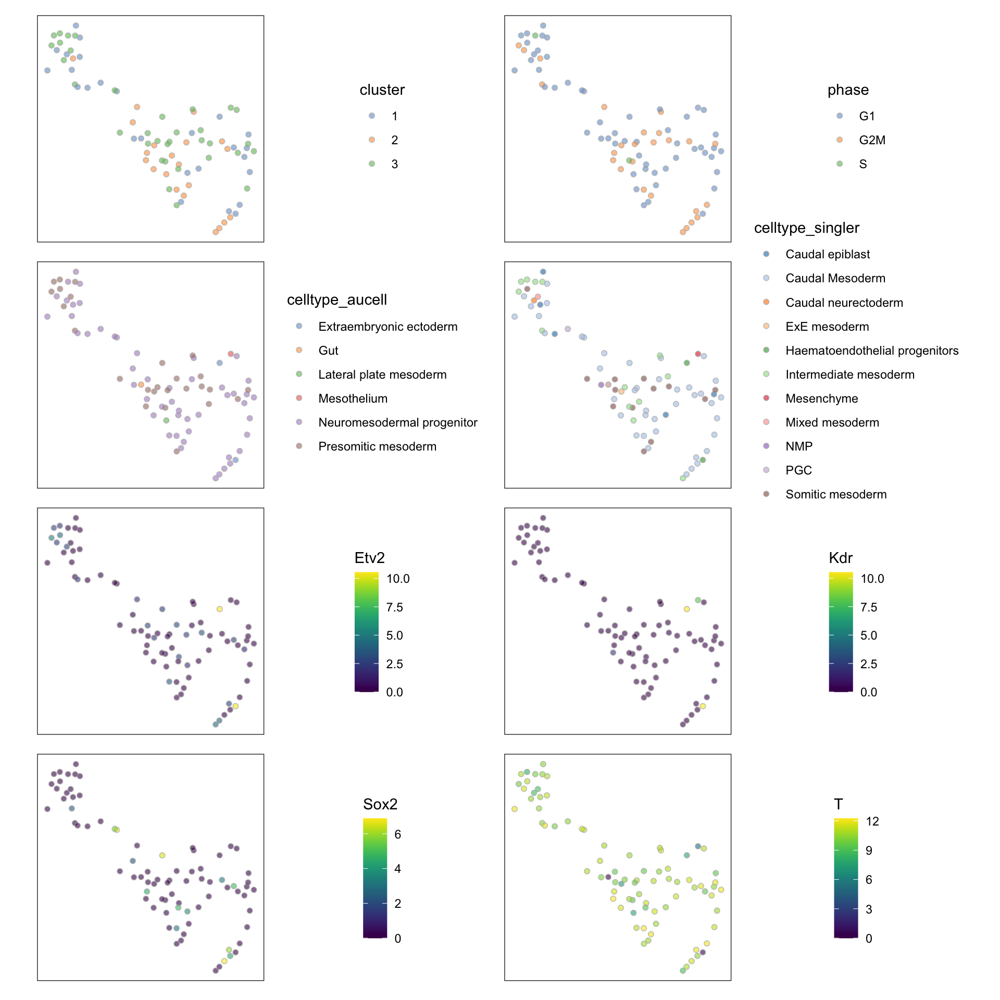
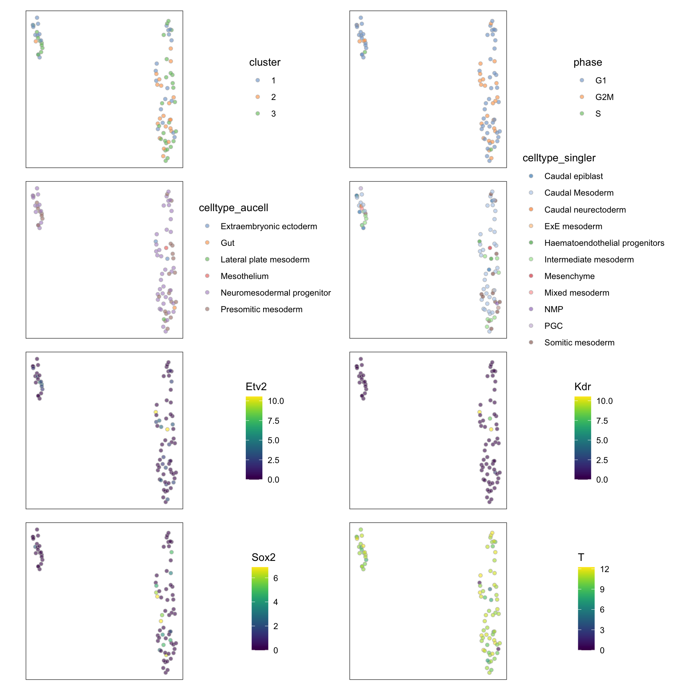
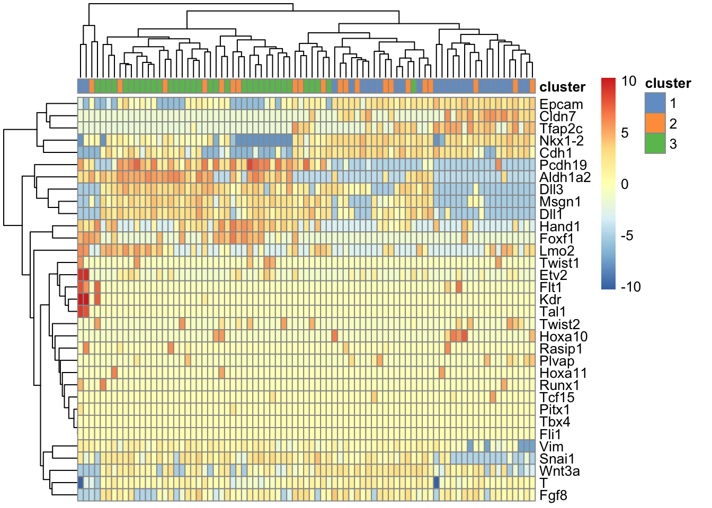
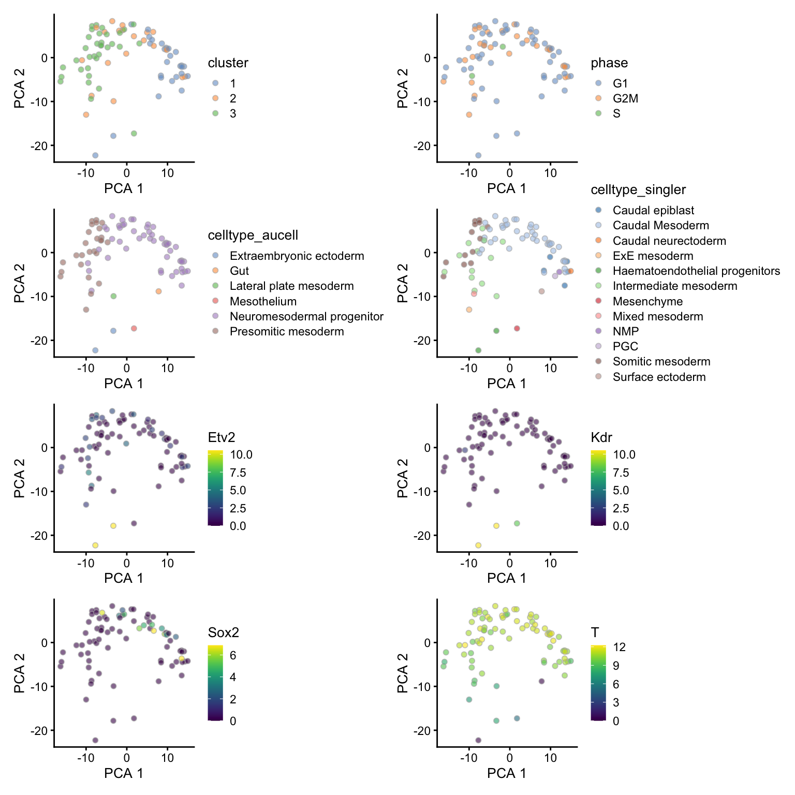
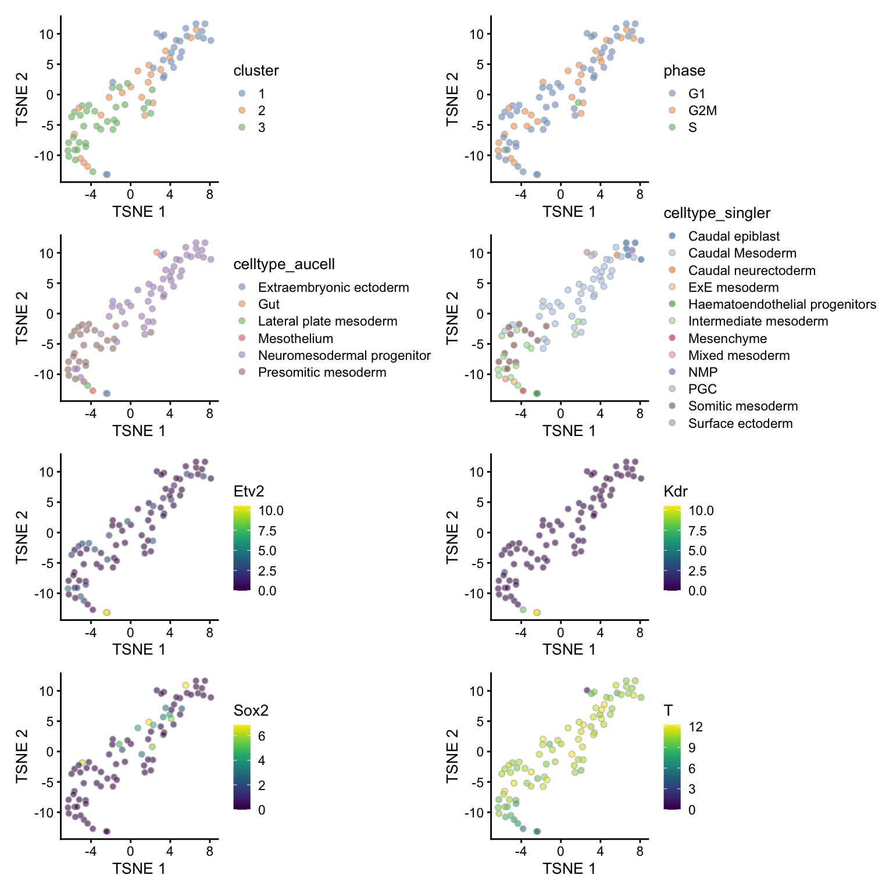
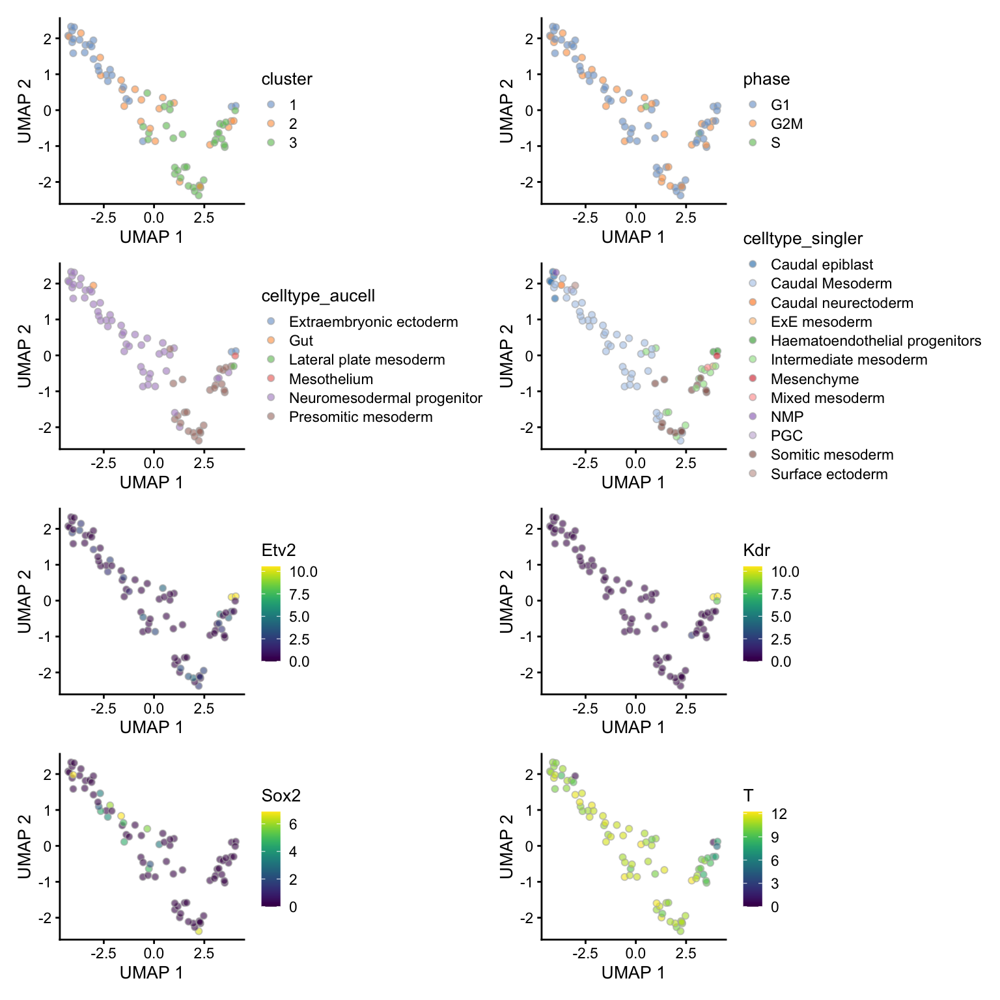

Cell heterogeneity
James Ashmore
28 January, 2021
Last updated: 2021-01-28
Checks: 7 0
Knit directory: LPMP_EHF_B/
This reproducible R Markdown analysis was created with workflowr (version 1.6.2). The Checks tab describes the reproducibility checks that were applied when the results were created. The Past versions tab lists the development history.
Great! Since the R Markdown file has been committed to the Git repository, you know the exact version of the code that produced these results.
Great job! The global environment was empty. Objects defined in the global environment can affect the analysis in your R Markdown file in unknown ways. For reproduciblity it’s best to always run the code in an empty environment.
The command set.seed(20200630) was run prior to running the code in the R Markdown file. Setting a seed ensures that any results that rely on randomness, e.g. subsampling or permutations, are reproducible.
Great job! Recording the operating system, R version, and package versions is critical for reproducibility.
Nice! There were no cached chunks for this analysis, so you can be confident that you successfully produced the results during this run.
Great job! Using relative paths to the files within your workflowr project makes it easier to run your code on other machines.
Great! You are using Git for version control. Tracking code development and connecting the code version to the results is critical for reproducibility.
The results in this page were generated with repository version 567b3e9. See the Past versions tab to see a history of the changes made to the R Markdown and HTML files.
Note that you need to be careful to ensure that all relevant files for the analysis have been committed to Git prior to generating the results (you can use wflow_publish or wflow_git_commit). workflowr only checks the R Markdown file, but you know if there are other scripts or data files that it depends on. Below is the status of the Git repository when the results were generated:
Ignored files:
Ignored: .Rhistory
Ignored: .Rproj.user/
Ignored: analysis/cache/
Ignored: data/
Ignored: output/
Ignored: shiny/
Ignored: slides/
Untracked files:
Untracked: code/Mode.R
Untracked: code/cleanEmbryoAtlasData.R
Untracked: code/cleanSCE.R
Untracked: code/dist_clusters_diag.R
Untracked: code/splitByCol.R
Unstaged changes:
Modified: _workflowr.R
Modified: analysis/11-atlas-neighbors.Rmd
Modified: analysis/12-atlas-trajectory.Rmd
Modified: analysis/18-cell-exploration.Rmd
Modified: analysis/interactive.Rmd
Note that any generated files, e.g. HTML, png, CSS, etc., are not included in this status report because it is ok for generated content to have uncommitted changes.
These are the previous versions of the repository in which changes were made to the R Markdown (analysis/19-cell-heterogeneity.Rmd) and HTML (docs/19-cell-heterogeneity.html) files. If you’ve configured a remote Git repository (see ?wflow_git_remote), click on the hyperlinks in the table below to view the files as they were in that past version.
| File | Version | Author | Date | Message |
|---|---|---|---|---|
| Rmd | e311abc | James Ashmore | 2020-11-03 | publish |
| html | e311abc | James Ashmore | 2020-11-03 | publish |
Motivation
The cells in this sample are quite homogenous, so they do not form distinct clusters. To identify subtle differences between the cells, we can use a pre-defined set of interesting genes to examine the biological heterogeneity.
Setup
Set chunk options:
knitr::opts_chunk$set(
autodep = TRUE,
cache = TRUE,
cache.path = "cache/19-cell-heterogeneity.Rmd/",
dev = "png",
error = FALSE,
message = FALSE,
warning = FALSE
)Load Bioconductor packages:
library(BiocSingular)
library(scater)
library(scran)Load CRAN packages:
library(ggforce)
library(msigdbr)
library(pheatmap)Read experiment data:
sce <- readRDS("output/09-cell-annotation.rds")Lineage pathways
Retrieve all gene sets and their member genes:
all <- msigdbr(species = "Mus musculus")Select relevant ontology terms:
key <- c(
"GO_ECTODERM_DEVELOPMENT",
"GO_EPITHELIAL_TO_MESENCHYMAL_TRANSITION",
"GO_PRIMITIVE_STREAK_FORMATION",
"GO_PARAXIAL_MESODERM_DEVELOPMENT",
"GO_PARAXIAL_MESODERM_FORMATION",
"GO_PARAXIAL_MESODERM_MORPHOGENESIS",
"GO_DETERMINATION_OF_LEFT_RIGHT_ASYMMETRY_IN_LATERAL_MESODERM",
"GO_LATERAL_MESODERM_DEVELOPMENT",
"GO_GASTRULATION",
"GO_ENDOTHELIUM_DEVELOPMENT"
)Subset gene sets by ontology terms:
all <- subset(all, gs_name %in% key)Plot heatmap of gene expression values:
for (k in key) {
dat <- subset(all, gs_name == k)
cat("### ", k, "\n")
plotHeatmap(sce, dat$gene_symbol, center = TRUE, symmetric = TRUE, colour_columns_by = "cluster", fontsize = 7)
cat("\n\n")
}GO_DETERMINATION_OF_LEFT_RIGHT_ASYMMETRY_IN_LATERAL_MESODERM

| Version | Author | Date |
|---|---|---|
| e311abc | James Ashmore | 2020-11-03 |
Perform PCA on expression data:
for (k in key) {
set.seed(802231141)
lab <- paste("PCA", k, sep = "_")
row <- subset(all, gs_name == k)
dim <- calculatePCA(sce, subset_row = row$gene_symbol, BSPARAM = ExactParam())
fit <- getClusteredPCs(dim, min.rank = 1, max.rank = ncol(dim))
num <- metadata(fit)$chosen
len <- seq_len(num)
dim[, len]
reducedDim(sce, lab) <- dim[, len]
}Perform TSNE on PCA matrix:
for (k in key) {
set.seed(545413716)
id1 <- paste("TSNE", k, sep = "_")
id2 <- paste("PCA", k, sep = "_")
reducedDim(sce, id1) <- calculateTSNE(sce, dimred = id2)
}Perform UMAP on PCA matrix:
for (k in key) {
set.seed(498830989)
id1 <- paste("UMAP", k, sep = "_")
id2 <- paste("PCA", k, sep = "_")
reducedDim(sce, id1) <- calculateUMAP(sce, dimred = id2)
}PCA
for (k in key) {
var <- c("cluster", "phase", "celltype_aucell", "celltype_singler", "Etv2", "Kdr", "Sox2", "T")
dim <- paste("PCA", k, sep = "_")
plt <- lapply(var, function(x) plotReducedDim(sce, dimred = dim, colour_by = x) + coord_fixed(1) + theme_no_axes())
cat("#### ", k, "\n")
print(patchwork::wrap_plots(plt, ncol = 2))
cat("\n\n")
}GO_DETERMINATION_OF_LEFT_RIGHT_ASYMMETRY_IN_LATERAL_MESODERM

| Version | Author | Date |
|---|---|---|
| e311abc | James Ashmore | 2020-11-03 |
TSNE
for (k in key) {
var <- c("cluster", "phase", "celltype_aucell", "celltype_singler", "Etv2", "Kdr", "Sox2", "T")
dim <- paste("TSNE", k, sep = "_")
plt <- lapply(var, function(x) plotReducedDim(sce, dimred = dim, colour_by = x) + theme_no_axes() + theme(aspect.ratio = 1))
cat("#### ", k, "\n")
print(patchwork::wrap_plots(plt, ncol = 2))
cat("\n\n")
}
GO_DETERMINATION_OF_LEFT_RIGHT_ASYMMETRY_IN_LATERAL_MESODERM

| Version | Author | Date |
|---|---|---|
| e311abc | James Ashmore | 2020-11-03 |
UMAP
for (k in key) {
var <- c("cluster", "phase", "celltype_aucell", "celltype_singler", "Etv2", "Kdr", "Sox2", "T")
dim <- paste("UMAP", k, sep = "_")
plt <- lapply(var, function(x) plotReducedDim(sce, dimred = dim, colour_by = x) + theme_no_axes() + theme(aspect.ratio = 1))
cat("#### ", k, "\n")
print(patchwork::wrap_plots(plt, ncol = 2))
cat("\n\n")
}
GO_DETERMINATION_OF_LEFT_RIGHT_ASYMMETRY_IN_LATERAL_MESODERM

| Version | Author | Date |
|---|---|---|
| e311abc | James Ashmore | 2020-11-03 |
Lineage markers
Read lineage markers:
ids <- read.csv("data/lineage-markers.csv")Plot heatmap of gene expression values:
plotHeatmap(sce, ids$gene_id, center = TRUE, symmetric = TRUE, colour_columns_by = "cluster")
| Version | Author | Date |
|---|---|---|
| e311abc | James Ashmore | 2020-11-03 |
Perform PCA on logcounts matrix of lineage markers:
set.seed(802231141)
sce <- runPCA(sce, subset_row = ids$gene_id, BSPARAM = ExactParam())Find the number of subpopulations in the data using clustering:
dim <- reducedDim(sce, "PCA")
fit <- getClusteredPCs(dim, min.rank = 1, max.rank = ncol(dim))
num <- metadata(fit)$chosenChoose number of PCs to retain:
len <- seq_len(num)
dim <- reducedDim(sce, "PCA")
reducedDim(sce, "PCA") <- dim[, len]Perform TSNE on PCA matrix:
set.seed(545413716)
sce <- runTSNE(sce, dimred = "PCA")Perform UMAP on PCA matrix:
set.seed(498830989)
sce <- runUMAP(sce, dimred = "PCA")PCA
var <- c("cluster", "phase", "celltype_aucell", "celltype_singler", "Etv2", "Kdr", "Sox2", "T")
plt <- lapply(var, function(x) plotReducedDim(sce, dimred = "PCA", colour_by = x))
patchwork::wrap_plots(plt, ncol = 2)
| Version | Author | Date |
|---|---|---|
| e311abc | James Ashmore | 2020-11-03 |
TSNE
var <- c("cluster", "phase", "celltype_aucell", "celltype_singler", "Etv2", "Kdr", "Sox2", "T")
plt <- lapply(var, function(x) plotReducedDim(sce, dimred = "TSNE", colour_by = x))
patchwork::wrap_plots(plt, ncol = 2)
| Version | Author | Date |
|---|---|---|
| e311abc | James Ashmore | 2020-11-03 |
UMAP
var <- c("cluster", "phase", "celltype_aucell", "celltype_singler", "Etv2", "Kdr", "Sox2", "T")
plt <- lapply(var, function(x) plotReducedDim(sce, dimred = "UMAP", colour_by = x))
patchwork::wrap_plots(plt, ncol = 2)
| Version | Author | Date |
|---|---|---|
| e311abc | James Ashmore | 2020-11-03 |
Summary
Session
Print session information:
sessionInfo()R version 4.0.2 (2020-06-22)
Platform: x86_64-apple-darwin17.0 (64-bit)
Running under: macOS Catalina 10.15.7
Matrix products: default
BLAS: /Library/Frameworks/R.framework/Versions/4.0/Resources/lib/libRblas.dylib
LAPACK: /Library/Frameworks/R.framework/Versions/4.0/Resources/lib/libRlapack.dylib
locale:
[1] en_GB.UTF-8/en_GB.UTF-8/en_GB.UTF-8/C/en_GB.UTF-8/en_GB.UTF-8
attached base packages:
[1] parallel stats4 stats graphics grDevices utils datasets
[8] methods base
other attached packages:
[1] pheatmap_1.0.12 msigdbr_7.2.1
[3] ggforce_0.3.2 scran_1.18.3
[5] scater_1.18.3 ggplot2_3.3.3
[7] SingleCellExperiment_1.12.0 SummarizedExperiment_1.20.0
[9] Biobase_2.50.0 GenomicRanges_1.42.0
[11] GenomeInfoDb_1.26.2 IRanges_2.24.1
[13] S4Vectors_0.28.1 BiocGenerics_0.36.0
[15] MatrixGenerics_1.2.0 matrixStats_0.57.0
[17] BiocSingular_1.6.0 workflowr_1.6.2
loaded via a namespace (and not attached):
[1] bitops_1.0-6 fs_1.5.0
[3] RColorBrewer_1.1-2 rprojroot_2.0.2
[5] tools_4.0.2 R6_2.5.0
[7] irlba_2.3.3 vipor_0.4.5
[9] uwot_0.1.10 DBI_1.1.1
[11] colorspace_2.0-0 withr_2.4.1
[13] tidyselect_1.1.0 gridExtra_2.3
[15] compiler_4.0.2 git2r_0.28.0
[17] BiocNeighbors_1.8.2 DelayedArray_0.16.1
[19] labeling_0.4.2 scales_1.1.1
[21] stringr_1.4.0 digest_0.6.27
[23] rmarkdown_2.6 XVector_0.30.0
[25] pkgconfig_2.0.3 htmltools_0.5.1.1
[27] sparseMatrixStats_1.2.0 limma_3.46.0
[29] rlang_0.4.10 rstudioapi_0.13
[31] FNN_1.1.3 DelayedMatrixStats_1.12.2
[33] farver_2.0.3 generics_0.1.0
[35] BiocParallel_1.24.1 dplyr_1.0.3
[37] RCurl_1.98-1.2 magrittr_2.0.1
[39] GenomeInfoDbData_1.2.4 scuttle_1.0.4
[41] patchwork_1.1.1 Matrix_1.3-2
[43] Rcpp_1.0.6 ggbeeswarm_0.6.0
[45] munsell_0.5.0 viridis_0.5.1
[47] lifecycle_0.2.0 stringi_1.5.3
[49] whisker_0.4 yaml_2.2.1
[51] edgeR_3.32.1 MASS_7.3-53
[53] zlibbioc_1.36.0 Rtsne_0.15
[55] grid_4.0.2 promises_1.1.1
[57] dqrng_0.2.1 crayon_1.3.4
[59] lattice_0.20-41 cowplot_1.1.1
[61] beachmat_2.6.4 locfit_1.5-9.4
[63] knitr_1.30 pillar_1.4.7
[65] igraph_1.2.6 codetools_0.2-18
[67] glue_1.4.2 evaluate_0.14
[69] vctrs_0.3.6 tweenr_1.0.1
[71] httpuv_1.5.5 gtable_0.3.0
[73] purrr_0.3.4 polyclip_1.10-0
[75] assertthat_0.2.1 xfun_0.20
[77] rsvd_1.0.3 RSpectra_0.16-0
[79] later_1.1.0.1 viridisLite_0.3.0
[81] tibble_3.0.5 beeswarm_0.2.3
[83] bluster_1.0.0 statmod_1.4.35
[85] ellipsis_0.3.1